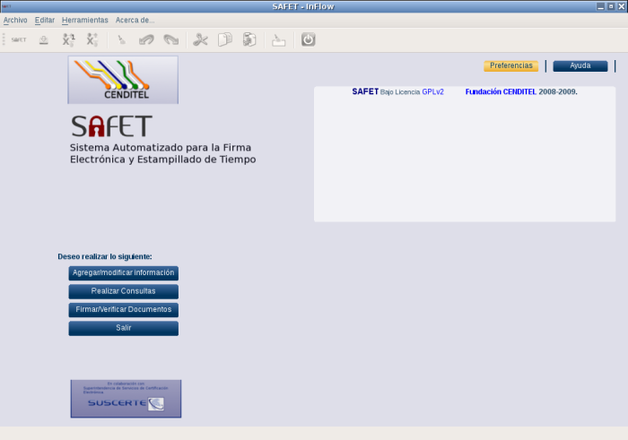
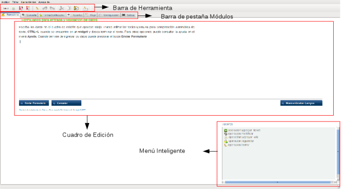

14.-Interfaz gráfica
La ventana principal de la aplicación inflow contiene la sección de los módulos, (ver figura S4-1)

Figura S4-1. Ventana Principal de inflow
14.1.- Ventana Secundaria
La ventana secundaria de la aplicación inflow está dividida en varias secciones que se muestran a
continuación:
-
Barra de herramienta
-
Barra de pestaña módulos
-
Cuadro de Edición
-
Menú inteligente

Figura S4-2. Venta secundaria